The autonomous conductor — not a performance tool, the actual author of the piece.
control path · drives MPL + the Orch chainlive
The biggest UI surface in the whole ecosystem: 4 shell views, one of them (Expert) holding 10 more tabs
underneath. Every screen below is a real screenshot of the running Standalone build with numbered region
callouts — not per-control this time (MC is bigger than OrchConductor), one marker per functional group,
same convention as the biggest 3 Orch guides.
01 · default
Score View
Load a blueprint, watch it play, resync instances. What every session actually opens to.
02
Compose
Hand-draw one blueprint's 5-curve arc directly on the graph.
03
Propose
v1: intent → duration → shape → seed scene → full blueprint, saved to a JSON library.
04 · 10 tabs
Expert
Every underlying system, exposed directly — Instances through Milestones.
01
Score View
The default view — not a tab of Expert, its own peer. What you see the moment the plugin opens.
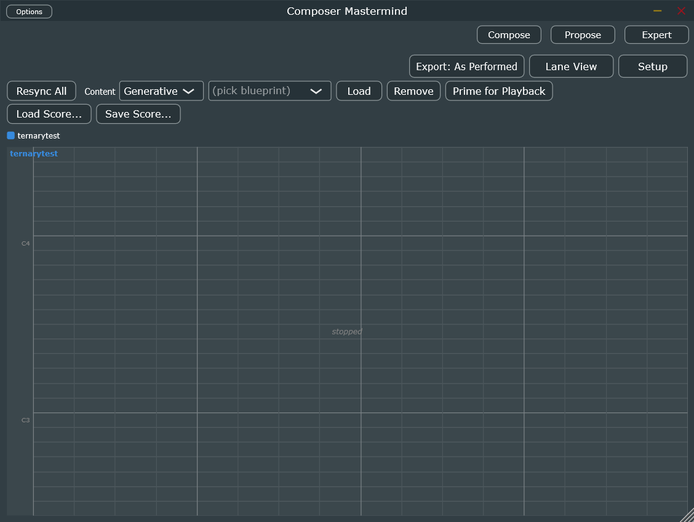
1
2
3
4
5
1
View Switch
Compose / Propose / Expert — the other 3 shell views. Whichever one isn't current shows here; the current one shows its own name in place of itself.
2
Export: As Performed · Lane View · Setup
Export toggles what leaves the plugin (as-performed vs. quantized); Lane View / Setup switch the track display below between live monitoring and hand-authoring modes.
3
Header Controls
Resync All, Content mode (Generative/Absolute), the active-blueprint picker, Load / Remove, and Prime for Playback — stamps the first section's content so patterns are already correct the instant transport starts.
4
Load Score / Save Score
Mirrors the composition-bundle Load/Save into this simple header — a full self-contained piece (Blueprint + Scenes + Instances + Motif Presets + Modulator Targets) in one JSON file.
5
Track / Piano-Roll Area
One row per registered instance, condensed-score style, synced live to what's actually playing. Drag out real MIDI. Center readout shows transport state (stopped here).
Real capture of the Standalone build — a real project loaded ("ternarytest"), Content mode = Generative.
02
Compose
The curve-based blueprint authoring screen — hand-draw a blueprint's arc directly, the same graph editor Generate/Propose preview onto.
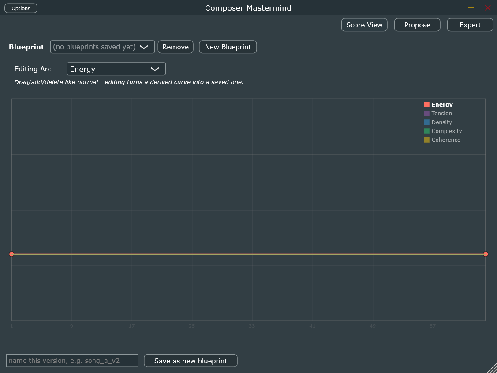
1
2
3
4
5
1
View Switch
Score View / Propose / Expert.
2
Blueprint Selector
Pick a saved blueprint to edit, Remove it, or New Blueprint to start fresh from a bar length + one curve.
3
Editing Arc
Which of the 5 dimensions (Energy/Tension/Density/Complexity/Coherence) the graph below is currently showing/editing.
4
Curve Graph
Drag a point to move it, double-click empty space to add one, right-click to remove. Editing a derived (grey) curve turns it into a real saved one.
5
Save As New Blueprint
Names and commits the current curve as its own blueprint version.
Real capture — no blueprint saved yet in this session, editing a flat default Energy curve.
03
Propose
Built this session (v1): intent (length, tempo, named shape) → a full generated blueprint, previewed before
commit, optionally saved to a JSON proposal library. Full parameter detail already exists in the project's own
docs/ — this section is the visual map, not a repeat of that.
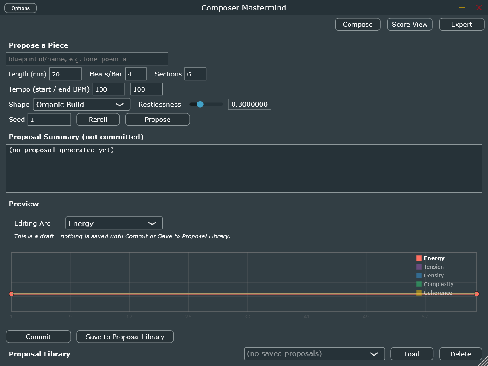
1
2
3
4
5
6
7
8
9
10
1
View Switch
2
Blueprint Name
3
Length / Beats-per-Bar / Sections
4
Tempo (start / end BPM)
Flat if equal; a ramp otherwise. Feeds a tempo map for hand-transcribing into Bitwig's own Tempo lane — MC never drives tempo directly.
5
Shape / Restlessness
10 named whole-piece arc shapes (ported from OrchConductor's own Narrative Lane Maker), plus a seeded-jitter variety knob.
6
Seed / Reroll / Propose
7
Proposal Summary
Total bars, the tempo map, and per-section archetype + suggested OrchConductor Narrative Lane.
8
Preview Graph
9
Commit / Save to Proposal Library
Independent actions — file a proposal away without making it live, or make it live without keeping a copy.
10
Proposal Library
Load or Delete a previously saved proposal.
Real capture — default values, nothing proposed yet this session.
04
Expert Mode
A fixed 10-tab TabbedComponent, not dynamic — every underlying system exposed
directly. A shared status bar and a periodic refresh timer keep every tab's lists current regardless of
which one is active.
id, MIDI channel, role (Anchor/Motif/Counterpoint/Unrestricted), Add Instance — must byte-match the target MPL instance's own External Control Channel.
2
Load / Remove / New Project
New Project (Reset All) is the cold-start/factory-reset control.
3
Registry Status
Coherence readout (how much registered instances currently agree) plus one line per instance: channel, enabled, role.
04.2
Scenes
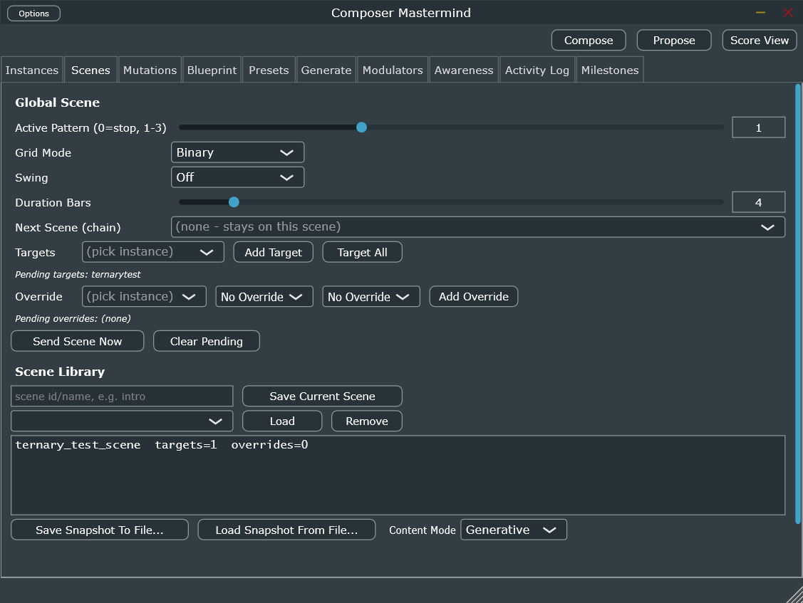
T
1
2
3
1
Global Scene
Active Pattern, Grid Mode, Swing, Duration Bars, and the hand-authored Next Scene chain — the older scene-to-scene mechanism, independent of a Blueprint's own section timeline.
2
Targets / Overrides / Send
Which instances this scene addresses, per-instance parameter overrides, Send Scene Now for a manual trigger.
3
Scene Library
Save/Load/Remove named scenes; snapshot import/export; Content Mode (Generative/Absolute) toggle.
04.3
Mutations
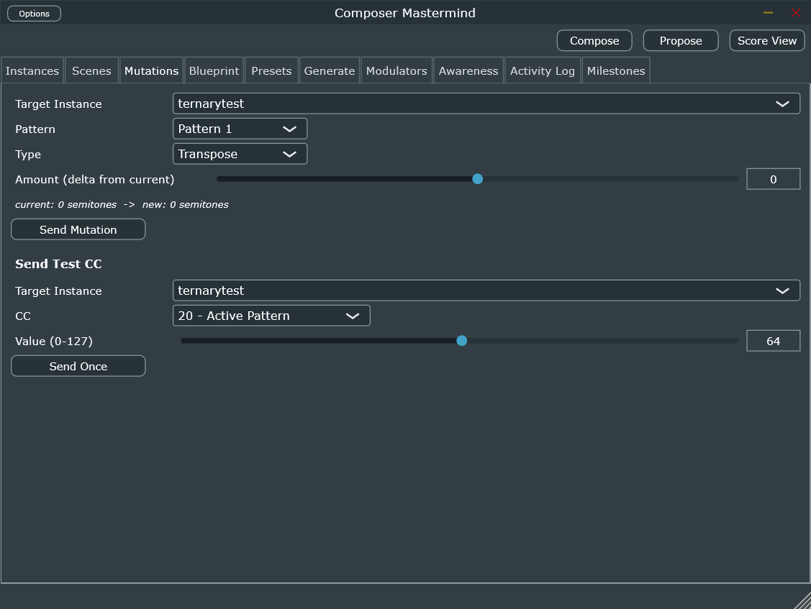
T
1
2
1
Send Mutation
Manually fire one Transpose/Rotation/Length/Inversion/Retrograde/M7 mutation at a target instance/pattern — Amount is a delta from the current value, not absolute.
2
Send Test CC
Raw CC diagnostic tool — pick an instance, CC number, 0-127 value, Send Once. For confirming MPL routing directly, bypassing every policy layer.
04.4
Blueprint
Two inner sub-tabs: Arcs (the 5-curve editor, same graph as Compose) and Sections (hand-authoring the section timeline directly).
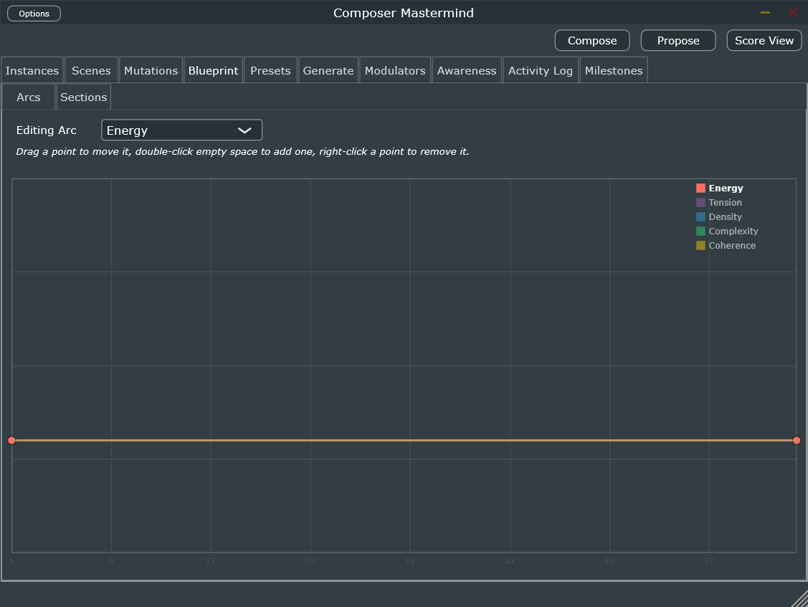
T
S
1
2
S
Arcs / Sections sub-tabs
1
Editing Arc
2
Curve Graph
Same graph editor as Compose — this IS the blueprint's real arc, not a copy.
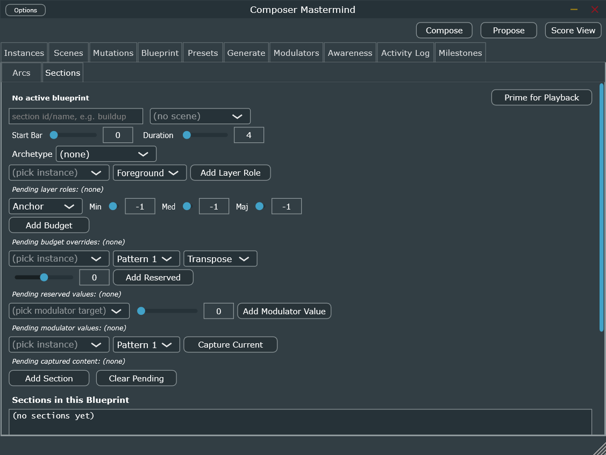
1
2
3
4
1
Active Blueprint / Prime for Playback
2
Section Fields
id, scene, Start Bar, Duration, Archetype (presentation/build/peak/release — drives the whole motif/policy machinery for that stretch).
The full authoring surface BlueprintGenerator fills in automatically for a generated section — hand-editable here for a manually built one.
4
Add Section / Sections in this Blueprint
Real capture — no active blueprint loaded in either sub-tab this session.
04.5
Presets
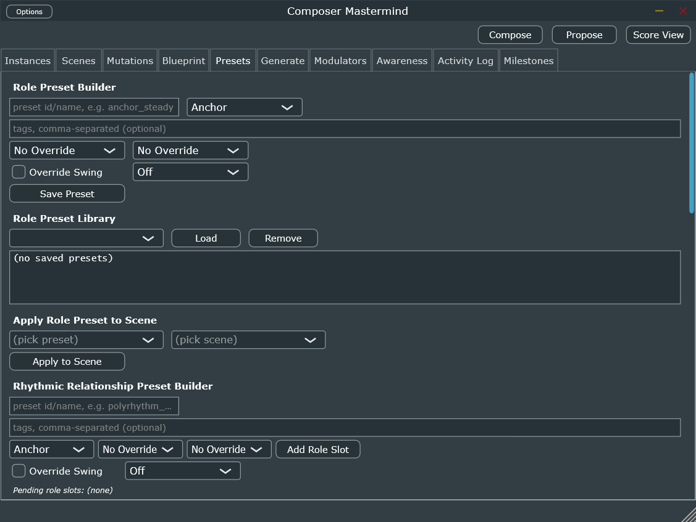
T
1
2
3
1
Role Preset Builder + Library
A named, reusable instance-parameter bundle addressed by role, not literal instance id — resolved at apply-time to whoever currently holds that role.
2
Apply Role Preset to Scene
3
Rhythmic Relationship Preset Builder
A deliberately joint, correlated choice across two or more roles at once (e.g. a real polyrhythm), not independent per-role picks.
04.6
Generate
The v1.1 generative layer — classifies an already-drawn arc into Presentation/Build/Peak/Release sections and dresses each with tag-matched presets. Propose (§03) builds on this same engine, upstream of it.
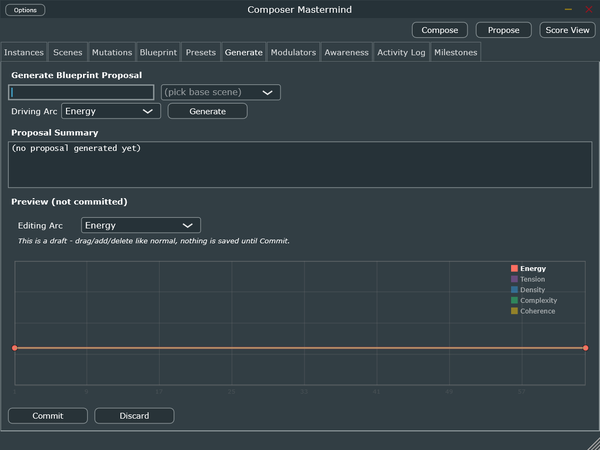
T
1
2
3
4
1
Generate Blueprint Proposal
Blueprint id, base scene, driving arc dimension, Generate.
2
Proposal Summary
3
Preview (not committed)
4
Commit / Discard
04.7
Modulators
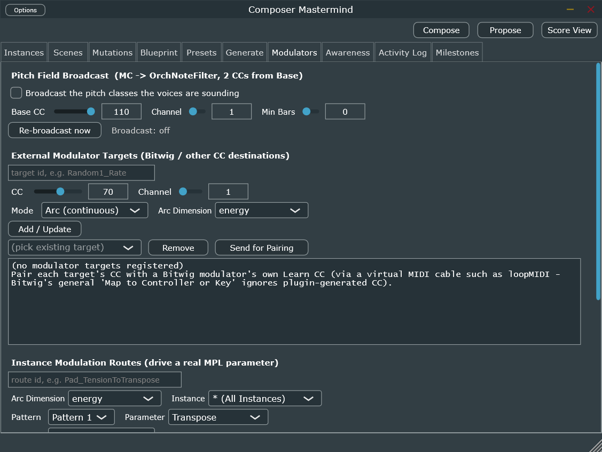
T
1
2
3
1
Pitch Field Broadcast
MC → OrchNoteFilter: the live 12-pitch-class mask of whatever's sounding, packed onto 2 CCs from Base CC (default 110).
2
External Modulator Targets
Any of the 5 arc dimensions (or the synthetic narrative-position) → any CC/channel — the MC→OrchConductor bridge and any Bitwig modulator ride this same mechanism.
3
Instance Modulation Routes
Drives a real MPL parameter directly from an arc dimension, per-instance or broadcast.
04.8
Awareness
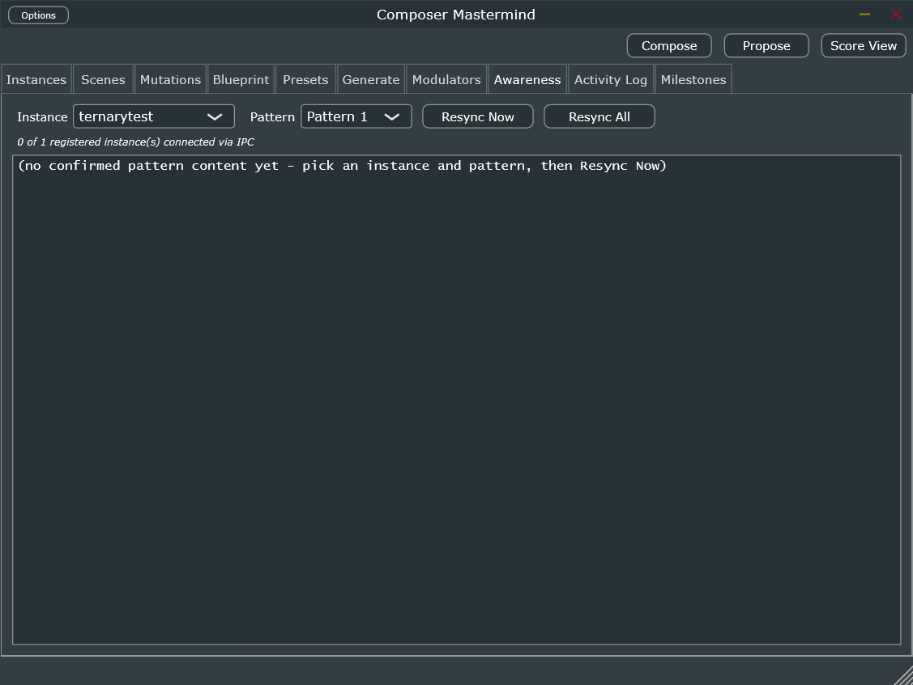
T
1
2
1
Instance / Pattern / Resync
The IPC connection count ("N of M registered instances connected via IPC") — the fastest way to confirm the PatternSyncServer channel is actually live before trusting anything below.
2
Confirmed Pattern Content
The real cached step content MC believes MPL holds, ground truth for MotifEngine's own writes.
04.9
Activity Log
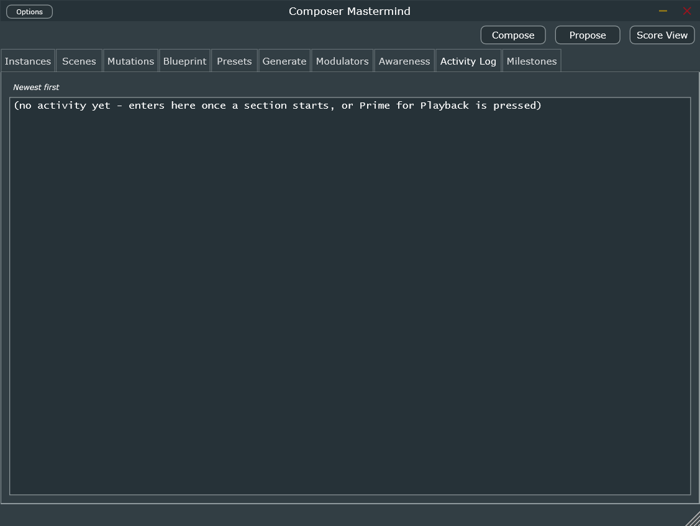
T
1
1
Activity Feed
Newest first — every section start and Prime for Playback event. The plain-language "what just happened" log.
04.10
Milestones
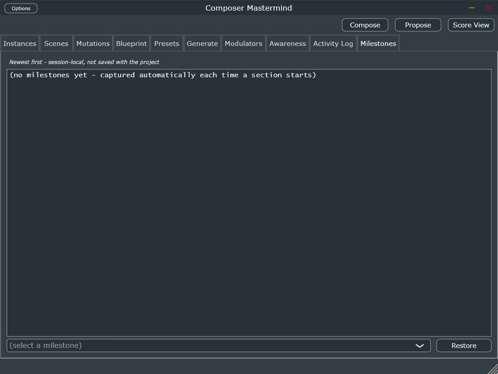
T
1
2
1
Milestones List
Captured automatically every time a section starts — session-local only, not saved with the project.
2
Restore
Rewinds live state to a captured milestone — an undo mechanism for a session gone sideways.
For narrative, start-to-finish walkthroughs rather than this control-by-control map, see
docs/user_guide.md (core loop) and docs/advanced_workflow_example.md (every tab
earning its keep in one real piece) — both already exist and cover the "how do I actually compose something"
question this page deliberately doesn't try to answer.